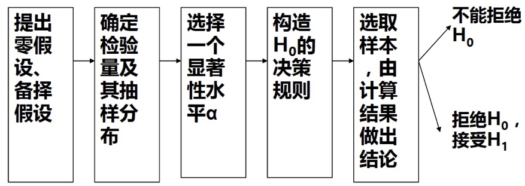
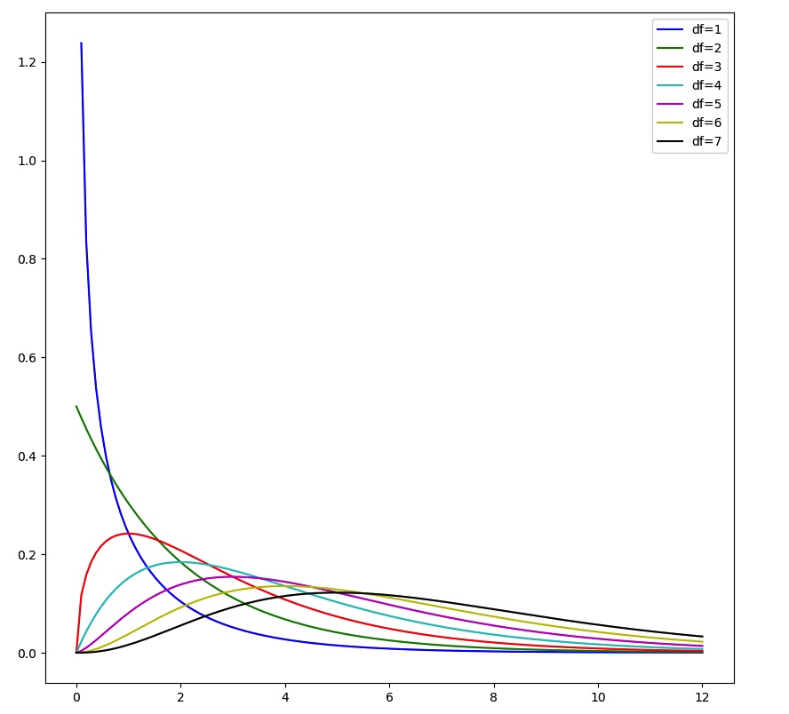
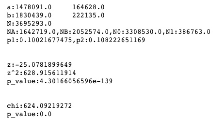

区间估计是指给定样本的情况下，对随机变量的概率分布模型的参数取值区间估计。
比如：给定一个正态分布
N(?,σ2) 的样本，对期望进行区间估计。
--
思路：样本的统计量也是符合某种概率分布，比如样本平均值、样本平均值/样本标准差等，而且一般和原分布共享某些参数值，用构造的分布的样本点去估计原来分布的参数值。
--
期望预估：x⎯⎯±za/2σn‾√
研究一个随机变量，对随机变量进行多次试验观察，那么每次样本值背后又是一个随机变量，n次试验就出现n个独立同分布的随机变量。
研究一个随机分布，假设某个参数符合命题（称为H0），则不符合对立命题（H1)，我们需要根据样本判断原假设是否可信。
假设检验和区间估计思想基本一致，只不过现在是确定模型参数某些满足条件，构造一个包含参数条件的样本分布，然后用样本统计量的分布去判断，然后用样本的统计值来判断是否符合原假设条件。
显著性水平
一个事先规定的很小的概率值，表示H0正确而拒绝原假设的概率。
p值
在原假设成立的情况下，样本中出现该统计量的概率。

样本均值服从正态分布，则计算出统计量
比如求两台机器某种工艺的区别（长度）
假定条件
统计量
对于大样本服从下列条件
比如AB实验的点击率差是否显著
也可用卡方分布检验
卡方检验（Chi-Squared Test）是一种统计量的分布在零假设成立时近似服从卡方分布的假设检验。
皮尔逊认为不是所有的分布都是符合正态分布,也有很多偏态的：
1、根据数据去从这一大族分布中挑选一个最能反映所得数据性态的分布，
2、要检验所得数据与这个分布的拟合如何,这一步就是似合优度检验.他为此引进了著名的“卡方检验法”(以后写为χ2 检验法)
假设某个分布服从：
现在对分布进行n次抽样，根据抽样确定是否服从H0假设，这种检验被称为拟合优度检验。
| 类别 | ... | |||
|---|---|---|---|---|
| 理论值 | ... | |||
| 观测值 | ... |
构造统计量
如果原假设
H0 成立,则在样本大小n→∞ 时,Z 的分布趋向于自度k−1 的χ2 分布,即χ2k−1
--
一般的，如果分布有r个未知参数，根据样本构建最大似然方程，解出r个分布参数，这时候Z 的分布区域自由度k−r−1 的χ2 分布（菲涅尔）

则当
这时候p值可以计算：
| 属性B \ 属性A | 1 | 2 | ... | a | sum |
|---|---|---|---|---|---|
| 1 | ... | ||||
| 2 | |||||
| ... | |||||
| b | |||||
| sum |
联列表是按两个属性作双向分类的表。问题：要检验A,B两属性独立的假设
假设两个属性无关，那么
Pij 的分布就可以用ui,vj 来计算分布，然后用极大似然方程求解分布，这时候统计量Z 就符合卡方检验χ2k−1−r
然后用统计量结果来验证，假设是否成立
对于分布的每个概率
特别地，当表是2x2时，可以简化统计量
可以用来AB实验时检验CTR是否显著
当0-1分布时，k=2，推导卡方分布
当
因此，对于点击率、转化率类似指标的检验用Z检验和卡方检验效果类似。
对于两个大样本点击率的假设检验时，也是类似的，可以验证，正态分布的值和卡方分布的值是一致的。
#A = {1:43.,0:44.}#B = {1:9.,0:4.}A = {1:164628.,0:1642719.-164628.}B = {1:222135.,0:2052574.-222135}NA = A[0] + A[1]NB = B[0] + B[1]N0 = A[0] + B[0]N1 = A[1] + B[1]N = A[0] + A[1] + B[0] + B[1]print "a:{}\t{}\nb:{}\t{}".format(A[0],A[1],B[0],B[1])print "N:{}".format(N)print "NA:{},NB:{},N0:{},N1:{}".format(NA,NB,N0,N1)p1=A[1]/NAp2=B[1]/NBprint "p1:{},p2:{}".format(p1,p2)import mathz = (p1-p2)/math.sqrt((p1*(1-p1)/NA+p2*(1-p2)/NB))print "\n\nz:{}".format(z)print "z^2:{}".format(z*z)from scipy.stats import normp_value = norm.cdf(z)print "p_value:{}\n\n".format(p_value)chi = N*(A[0]*B[1]-A[1]*B[0])**2/(NA*NB*N0*N1)print "chi:{}".format(chi)from scipy.stats import chi2p_value = 1-chi2.cdf(chi,1)print "p_value:{}".format(p_value)

根据是否预期实验差值和基准值，要求样本结果有显著性差异的情况下，最小的样本值